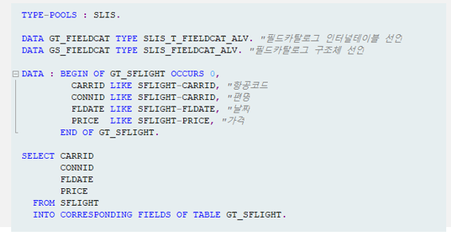

20221101 - ALV
internal table을 field catalog로 변형
REUSE_ALV_FIELDCATALOG_MERGE 함수를 사용하면, internal table의 구성 필드를 필드 카탈로그로 한 번에 변형
- 단, 이때 internal table은 OCCURS 0을 이용하여 선언된 경우만 가능
데이터 선언 및 가져오기

Function을 통한 필드 카탈로그 설정
REUSE_ALV_FIELDCATALOG_MERGE 함수를 호출하면 필드 카탈로그 정보가 internal table에 저장


function을 통한 ALV 출력
REUSE_ALV_GRID_DISPLAY 함수를 호출하면, internal table 정보를 가지고 ALV 출력


TYPE-POOLS: SLIS.
DATA GT_FIELDCAT TYPE SLIS_T_FIELDCAT_ALV.
DATA GS_FIELDCAT TYPE SLIS_FIELDCAT_ALV.
DATA: BEGIN OF GT_SFLIGHT OCCURS 0,
CARRID LIKE SFLIGHT-CARRID,
CONNID LIKE SFLIGHT-CONNID,
FLDATE LIKE SFLIGHT-FLDATE,
PRICE LIKE SFLIGHT-PRICE,
END OF GT_SFLIGHT.
SELECT * FROM SFLIGHT INTO CORRESPONDING FIELDS OF TABLE GT_SFLIGHT.
CALL FUNCTION 'REUSE_ALV_FIELDCATALOG_MERGE'
EXPORTING
I_PROGRAM_NAME = SY-REPID
I_INTERNAL_TABNAME = 'GT_SFLIGHT'
I_INCLNAME = SY-REPID
CHANGING
CT_FIELDCAT = GT_FIELDCAT.
CALL FUNCTION 'REUSE_ALV_GRID_DISPLAY'
EXPORTING
IT_FIELDCAT = GT_FIELDCAT
TABLES
T_OUTTAB = GT_SFLIGHT.필드 카탈로그 정의
checkbox
데이터 선언 및 가져오기

필드 카탈로그 할당

function을 통한 ALV 출력
REUSE_ALV_GRID_DISPLAY 함수를 호출하면 internal table 정보를 가지고 ALV 출력


신호등 아이콘
데이터 선언 및 가져오기

필드 카탈로그 할당

internal table 내 색상 정의

function을 통한 ALV 출력
REUSE_ALV_GRID_DISPLAY 함수를 호출하면, internal table 정보를 가지고 ALV 출력


DATA: BEGIN OF GS_SFLIGHT,
COLOR TYPE C LENGTH 4,
LIGHT TYPE C,
CARRID LIKE SFLIGHT-CARRID,
CONNID LIKE SFLIGHT-CONNID,
PRICE LIKE SFLIGHT-PRICE,
FLDATE LIKE SFLIGHT-FLDATE,
CELLCOLOR TYPE LVC_T_SCOL,
CELLBUTTON TYPE LVC_T_STYL,
END OF GS_SFLIGHT.
DATA: GT_SFLIGHT LIKE TABLE OF GS_SFLIGHT.
CLEAR: GS_FIELDCAT.
GS_FIELDCAT-COL_POS = 1.
GS_FIELDCAT-FIELDNAME = 'COLOR'.
GS_FIELDCAT-SELTEXT_M = '체크'.
GS_FIELDCAT-ICON = 'X'.
APPEND GS_FIELDCAT TO GT_FIELDCAT.
CLEAR: GS_FIELDCAT.
GS_FIELDCAT-COL_POS = 2.
GS_FIELDCAT-FIELDNAME = 'CARRID'.
GS_FIELDCAT-SELTEXT_M = '항공코드'.
GS_FIELDCAT-KEY = 'X'.
GS_FIELDCAT-JUST = 'L'.
APPEND GS_FIELDCAT TO GT_FIELDCAT.
CLEAR: GS_FIELDCAT.
GS_FIELDCAT-COL_POS = 3.
GS_FIELDCAT-FIELDNAME = 'CONNID'.
GS_FIELDCAT-SELTEXT_M = '편명'.
GS_FIELDCAT-JUST = 'C'.
APPEND GS_FIELDCAT TO GT_FIELDCAT.
CLEAR: GS_FIELDCAT.
GS_FIELDCAT-COL_POS = 4.
GS_FIELDCAT-FIELDNAME = 'PRICE'.
GS_FIELDCAT-SELTEXT_M = '가격'.
GS_FIELDCAT-CURRENCY = 'KRW'.
GS_FIELDCAT-JUST = 'R'.
GS_FIELDCAT-DO_SUM = 'X'.
GS_FIELDCAT-EDIT = 'X'.
GS_FIELDCAT-OUTPUTLEN = 20.
APPEND GS_FIELDCAT TO GT_FIELDCAT.
SELECT * FROM SFLIGHT INTO CORRESPONDING FIELDS OF TABLE GT_SFLIGHT.
LOOP AT GT_SFLIGHT INTO GS_SFLIGHT.
IF GS_SFLIGHT-CONNID = '0017'.
GS_SFLIGHT-COLOR = '@52@'.
ELSE.
GS_SFLIGHT-COLOR = '@09@'.
ENDIF.
MODIFY GT_SFLIGHT FROM GS_SFLIGHT.
ENDLOOP.
CALL FUNCTION 'REUSE_ALV_GRID_DISPLAY'
EXPORTING
IT_FIELDCAT = GT_FIELDCAT
TABLES
T_OUTTAB = GT_SFLIGHT.부득이한 상황에 DB를 수정해야 하는 경우